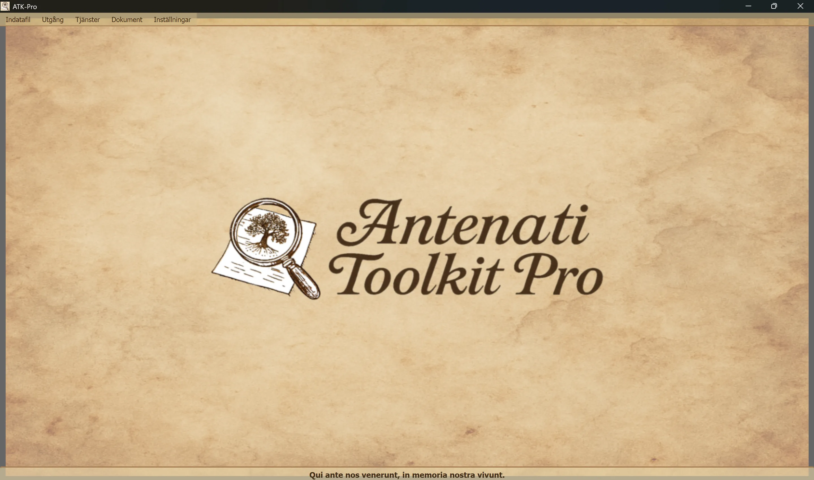

────────────────────────────────────────────────────────────────────────────────
🪟 Windows
ATK-Pro-Setup-vx.x.x.exe från den officiella versionssidan🐧 Linux
ATK-Pro-vx.x.x.deb (Debian/Ubuntu) eller .tar.gz från den officiella versionssidansudo dpkg -i ATK-Pro-vx.x.x.deb eller dubbelklicka i Nautilus/Files./ATK-Pro från den extraherade mappen🍎 macOS
ATK-Pro-vx.x.x.dmg från den officiella versionssidan🪟 Windows
C:\Program Files\ATK-Pro\C:\Users\[DittNamn]\Documents\ATK-Pro\output\C:\Users\[DittNamn]\Documents\ATK-Pro\input\🐧 Linux
/opt/ATK-Pro/ (deb) eller uppackad mapp (.tar.gz)~/Documents/ATK-Pro/output/~/Documents/ATK-Pro/input/🍎 macOS
/Applications/ATK-Pro.app~/Documents/ATK-Pro/output/~/Documents/ATK-Pro/input/────────────────────────────────────────────────────────────────────────────────
De tillgängliga språken är:
Dessa språk beräknas, baserat på tillgängliga data i slutet av 2025, täcka cirka 98 % av ättlingar till italienare och italienska eller italiensktalande samhällen över hela världen.
Vid första körningen skapar programmet automatiskt följande mappar:
C:\Users\[DittNamn]\Documents\ATK-Pro\output\C:\Users\[DittNamn]\Documents\ATK-Pro\output\doc\ (standarddokumentmapp)C:\Users\[DittNamn]\Documents\ATK-Pro\output\reg\ (standardregistermapp)~/Documents/ATK-Pro/output/input\ (valfritt, för indatafiler)Under bearbetningen skapas tillfälliga mappar för de nedladdade tiles (tiles_canvas_X/) och, om PDF väljs, temporära filer för dess generering.
Alla temporära mappar och filer raderas automatiskt när bearbetningen är klar.
Endast de färdiga filerna bevaras (bilder i valda format, PDF, manifest och metadata).
Använd Meny → Inställningar → "Välj utdatamappar" för att ändra utdatamappar. Valen sparas och återställs automatiskt i nästa session.
Kommandot Inställningar → Resursprofil styr parallelliseringen som används under nedladdning, bildrekonstruktion och PDF-generering:
Profilen ändrar inte kvaliteten, rättigheterna eller antalet hämtade dokument. Eventuella specifika försiktighetsgränser för portalen fortsätter att ha företräde.
────────────────────────────────────────────────────────────────────────────────
Huvudfönstret i ATK-Pro har en enkel och intuitiv struktur.

Det latinska mottot "Qui ante nos venerunt, in memoria nostra vivunt" visas längst ner som en påminnelse om vikten av rötter och kollektivt minne.
Överst i fönstret, under namnlisten:
[Indatafil] [Utdata] [Tjänster] [Dokument] [Inställningar]
Varje meny innehåller specifika knappar och inställningar (se nästa avsnitt).
Hanterar inläsning av IIIF-poster:
├─ Exempel på inmatning
│ └─ Visa exempelfilen (visar formatet med par: D/R Mode + URL)
├─ Öppna ingång
│ └─ Välj en .txt-fil med dina IIIF-poster
│ (Måste innehålla par: D/R-läge på rad 1, URL på rad 2)
└─ Redigera inmatning
└─ Redigera den för närvarande laddade indatafilen
(Lägg till/ta bort poster, Ändra URL, Spara ändringar)
Hanterar bearbetning och utdata:
├─ Process │ └─ Startar nedladdning, rekonstruktion och lagring av bilder │ (Visar ett statusfönster i realtid) ├─ Öppna utdatamappen │ └─ Öppnar mappen med de bearbetade filerna i Utforskaren └─ Visa tidigare behandlingar └─ Lista över redan behandlade poster
Lista över integrerade tjänster:
├─ AI Assisterad sökning │ └─ Föreslår portaler, forskningsspår och släktforskningsfrågor som ska verifieras ├─ Bildvisning │ └_─ Visar nedladdade bilder och/eller genererade PDF-filer ├─ Visar JSON-metadata │ └─ Original JSON och metadata (genealogisk, teknisk, EXIF) ├─ Avancerad OCR │ └_─ Handskrivna texter från 1800-talet, kyrkolatin, senmedeltida texter ├─ OCR-översättning │ └_─ Automatisk översättning av extraherade texter till de valda språken └─ GEDCOM Export └─ GEDCOM, Gramps, Family Tree Maker, Ancestry, MyHeritage, WikiTree, etc.
Tillgång till resurser och dokumentation:
├─ Friskrivningsklausul - Lagliga bestämmelser och användarvillkor ├─ Presentation av författaren - Bakgrund om projektets författare ├─ Presentation av projektet - ATK-Pros historia, motivation och färdplan ├─ Guide - Huvudindex för den modulära guiden └─ Information - Version, upphovsrätt, kontakt e-post
Allmän konfiguration av programmet:
├─ Byt språk
│ └─ Välj språk för användargränssnittet (kräver omstart)
├─ Välj bildformat
│ └_─ Välj mellan PNG, JPG, TIFF och PDF (minst 1 krävs)
│ PDF kan väljas separat eller tillsammans med bildformaten
│ Valet sparas och förvals automatiskt i nästa session
├─ Välj utdatamappar
│ └─ Öppnar först val av mappläge och sedan mappvalsfönster:
│ • En mapp för allt → en enda mapp för dokument och poster
│ • Separata mappar doc./reg. → en mapp för alla dokument, en för alla reg.
│ • En mapp per post → en separat mapp för varje post
│ Status och mappar sparas och återställs i nästa session
├─ Exportera konfiguration
│ └─ Sparar de aktuella inställningarna i en fil
├─ Importera konfiguration
│ └─ Laddar en tidigare sparad inställningsfil (återställer alla inställningar och sökvägar)
├─ Sök efter uppdateringar
│ └_─ Söker efter nya versioner av programmet
└─ Stäng
└─ Avsluta programmet (visar PayPal.me-supportbannern)
────────────────────────────────────────────────────────────────────────────────
ATK-Pro är tillgänglig på 20 språk:
Språket kan ändras när som helst via Meny → Inställningar → Ändra språk.
Programmet måste startas om innan det nya språket används.
Vid omstart laddar programmet automatiskt det nyvalda språket.
När språket ändras översätts följande:
Om en standardmodell tas ur bruk eller inte längre är tillgänglig frågar ATK-Pro katalogen som autentiseringsuppgifterna har åtkomst till, väljer en generell modell som passar funktionen och vid behov bilder och provar upp till tre alternativ. Fallback aktiveras inte vid kvot-, nätverks- eller autentiseringsfel.
Modellåsidosättning: en modell som anges manuellt förblir bindande och ersätts aldrig automatiskt.